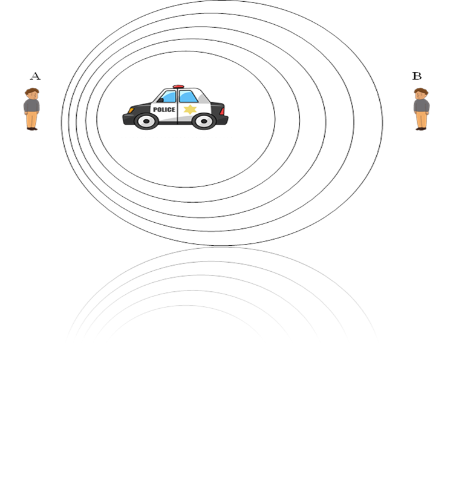

Tujuan
Menentukan frekuensi yang didengar oleh pengamat pada kondisi pengamat diam dengan sumber yang bergerak serta pengamat yang bergerak dengan sumber sdiam beserta faktor yang mempengaruhinya.
Teori
Efek Dopler adalah peristiwa naik atau turunnya frekuensi gelombang bunyi yang terdengar penerima bunyi ketika sumber bunyi bergerak mendekat atau menjauh (Anissa: 2020). Contoh efek Dopler dapat dilihat pada gambar dibawah.

Pada saat sumber suara diam, kedua penerima mendengar besar frekuensi yang sama. Saat sumber suara bergerak, salah satu penerima mendengar frekuensi yang lebih besar dari sebelumnya dan penerima lain mendengar frekuensi yang lebih kecil dari sebelumnya. Persamaan Efek Doppler adalah:

Tanda positif dan negatif pada vp dan vs bergantung pada arah gerak pengamat maupun sumber bunyi. vp bernilai positif apabila pengamat mendekati sumber bunyi dan bernilai negatif apabila menjauhi sumber bunyi. Demikian pula dengan vs bernilai positif apabila sumber menjauhi pengamatdan bernilai negatif apabila mendekati pengamat.
Alat dan Bahan
- Komputer, laptop atau smartphone
- Jaringan internet
- Browser (Chrome, Mozila Firefox, dll.)
Langkah Kerja
- Buka alamat website laboratorium virtual gelombang bunyi sebagai berikut:
http://virtuallabgelombangbunyi.000webhostapp.com/ - Kemudian klik mulai.
- Lalu pilih praktikum, selanjutnya pilih efek Doppler.
- Buat keadaan saat, pengamat diam dan sumber bunyi mendekati serta menjauhi pengamat dengan cara,
- Mengatur posisi mobil pengamat tepat berada di tengah lintasan
- Mengatur kecepatan pengamat vp= 0 m/s
- Kemudian atur frekuensi sumber bunyi tetap yaitu 300Hz
- Lalu atur kecepatan mobil sumber bunyi 10 m/s, 15m/s, 20m/s, 25m/s dan 30m/s
- Selanjutnya klik Start
- Kemudian catat frekuensi yang didengar oleh pengamat pada saat mobil sumber bunyi mendekat dan menjauh.
- Buat keadaan saat, sumber bunyi diam dan pengamat mendekati serta menjauhi pengamat dengan cara,
- Mengatur posisi mobil sumber bunyi tepat berada di tengah lintasan
- Mengatur kecepatan sumber bunyi vs= 0 m/s
- Kemudian atur frekuensi sumber bunyi tetap yaitu 300Hz
- Lalu atur posisi mobil pengamat berada pada posisi awal, atur juga kecepatan mobil pengamat 10 m/s, 15m/s, 20m/s, 25m/s dan 30m/s
- Selanjutnya klik Start
- Kemudian catat frekuensi yang didengar oleh pengamat pada saat mobil pengamat menjauh dan mendekat.
Hasil Pengamatan
- Sumber bunyi mendekati dan menjauhi pengamat
- Pengamat mendekati dan menjauhi sumber bunyi
| No. | Frekuensi Sumber Bunyi (Hz) | Kecepatan Sumber Bunyi (m/s) | Kecepatan Pangamat (m/s) | Frekuensi Pengamat (Hz) saat Sumber Mendekat | Frekuensi Pengamat (Hz) saat Sumber Menjauh |
|---|---|---|---|---|---|
| 1. | |||||
| 2. | |||||
| 3. | |||||
| 4. | |||||
| 5. |
| No. | Frekuensi Sumber Bunyi (Hz) | Kecepatan Sumber Bunyi (m/s) | Kecepatan Pangamat (m/s) | Frekuensi Pengamat (Hz) saat Pengamat Mendekat | Frekuensi Pengamat (Hz) saat Pengamat Menjauh |
|---|---|---|---|---|---|
| 1. | |||||
| 2. | |||||
| 3. | |||||
| 4. | |||||
| 5. |
Bahan Diskusi
- Bagaimana pengaruh kecepatan mobil sumber bunyi terhadap frekuensi yang didengar oleh pengamat?
- Bagaimana pengaruh kecepatan mobi pengamat terhadap frekuensi yang didengar oleh pengamat?
- Faktor apa saja yang mempengaruhi frekuensi yang didengar oleh pengamat?
Kesimpulan
Presentasikanlah hasil kerja kelompok Anda di depan kelas.
Good Luck... :)